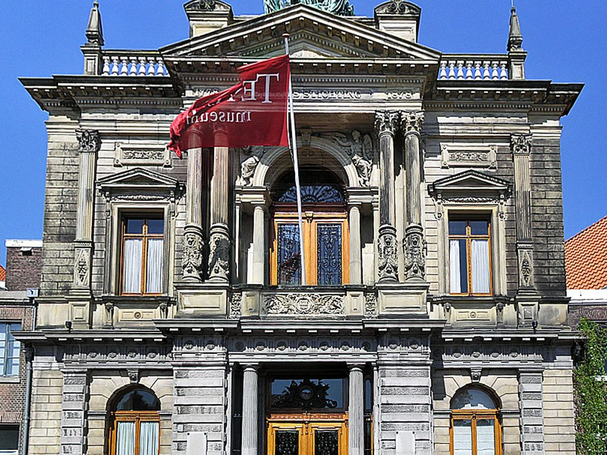
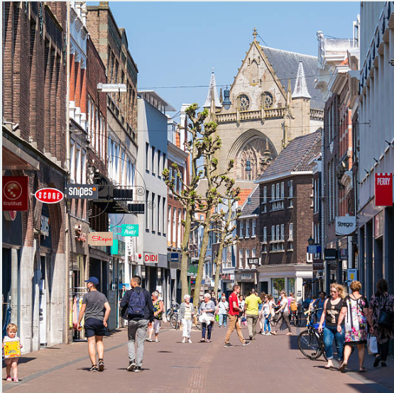

The medieval city of Haarlem is one of the most photogenic destinations in the Netherlands.Easily
reachable by train (just fifteen minutes from Amsterdam Central Station) Haarlem is often
referred to as a scaled-down version of its more famous neighbour.
But to think of it in such
terms does a disservice to a city that beats with its own vibrant pulse and overflows with
a rich history, epoch-spanning architecture and a thriving cultural scene all of its own.
Museums

Haarlem has 15 different museums, which offers art and culture that suit all tastes. Frans Hals
Museum and Teylers Museum are internationally renowned, Het Dolhuys takes you into the world of
the mind. There is also lots to discover in the museums for children.
It is well known for its wide choice of excellent restaurants, cosy cafe’s
and lively bars, and is really making a name for itself in gastronomic circles.
There are also several Michelin-starred restaurants around Haarlem, like the
fabulous De Bokkedoorn in Overveen and De Vrienden van Jakob on the Duin & Kruidberg
estate in Santpoort.
The city center of Haarlem has still not lost its old historic character. The monumental
center is dominated by small courtyards, squares, canals and churches.
The Grote or St. Bavo church in particular is a beautiful piece of architecture.
The surrounding flower bulb fields attract thousands of visitors to this region every year.
Culture lovers will do well to take one of the fascinating walks through the city.
You have different routes such as the monument walk and the hofjes walk.
Several restaurants can be found throughout the city. The Burgundians among us
will certainly appreciate the city of Haarlem for this.Haarlem is also a pleasant city for
shopping.
The nicest shopping streets in Haarlem are the Grote Houtstraat, Barteljorisstraat,
Warmoesstraat and Zijlstraat. For some probably known names from the Monopoly board game.
These streets in the center of the city have a very diverse range of traders.
Unfortunately, as in every big city, the big chains do predominate.
Spread out through the center there are many pleasant terraces and eateries.
Haarlem Center is full of interesting place to visit like:
Shops

Haarlem Center had been voted Best Shopping City in the Netherlands many times.It has a diverse
range of shops from small boutiques to concept stores or to the usual Dutch department stores like
Hema, Hudson's Bay, Bojangles Shoes and chains like H&M, Zara, Bershka.
Most of Oude Stad shopping is in a traffic-free zone.
The shopping streets are:
Grote Houstraat
Kleine Houstraat
Warmoesstraat
Gierstraat
Companies
There are a lot of employment in the Center whereby you can find more than 2000 companies
like:
Haddock Technics Airconditioning
Pepperminds marketing company B.V
ME.Media Engineering
Tourist Attraction
Grote Markt
Where you can find the statue of Laurens Janszoon Coster which is important for Haarlem.
According to many, he was the inventor of Dutch printing. Others point to the German
Johannes Gutenberg for this.The large market is often the setting for socializing and
special events.
There is still a lot of history to be seen with buildings such as the old Vleeshal,
the Town Hall and the Grote or St. Bavo church. The Grote or St. Bavo church has a
special fact.
Mozart has sometimes played a piece of music on the Müller organ. The oldest statue of
Haarlem can be found in the town hall.
Teyler Museum
The Teylers Museum is a beautiful art, natural history and science museum created as a
centre for contemporary art and science.
Housing an inspiring collection of artefacts, books,scientific instruments, drawings,
fossils and minerals,the centre was established so that people could discover the world
independently and without coercion from the church and state.
The association is very active in the area of fish stock management since 1906.
They are active in giving lessons for schools, also they have an active fly fishing
department where they are able to fish as much as possible.
The Haarlem Canoe Association (HKV) has three sailing disciplines: flat water
sailing,seafaring and sailing with a SUP board.You can participate in tours,
training and other activites like: New Year reception and outing.
It is an association situated in many part of the Netherlands.Their aim is to get
closer to themselves through active and meditative training by acquiring techniques so that
the practitioner becomes stronger and more resilient both mentally and physically.
This sport is more than a self-defense course or a gym that works on strength and
fitness.
It teaches you how to defend optimally in situations that occur in practice
Sports club HLC is an association in Haarlem and immediate surroundings where boys
and girls can go for gymnastics, guppie gym & gymkids, dance, acrogym and circus.